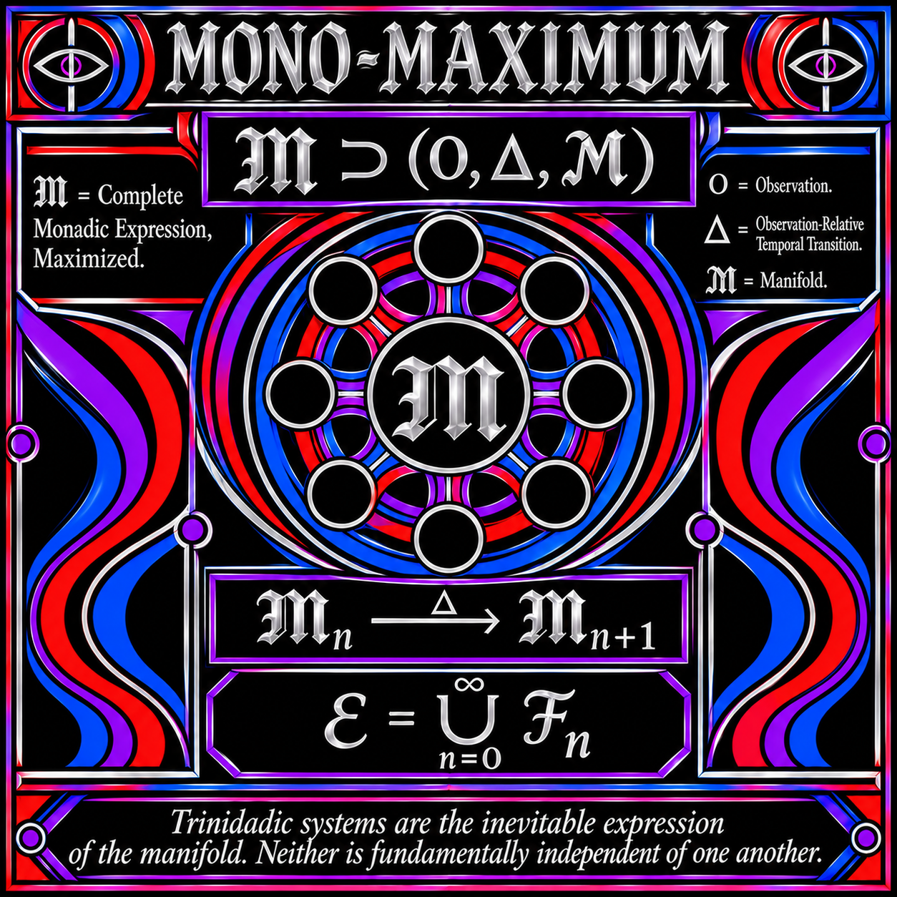

MONO-MAXIMUM

MONO-MAXIMUM
The Maximal Attainable Fiber-Bundle Configuration Space
- Definition
Mono-Maximum is the encompassing magnitude of the tubular manifold: the maximal configuration space attainable through its permitted internal operations.
It represents the maximum Monad not as a single largest structure, but as the complete fiber-bundle configuration space generated by the system.
Its defining characteristic is the totality of configurations that can be reached through the manifold's own structural transformations.
- Initial Configuration
The system begins with an initial configuration space, designated C₀.
This establishes the starting structural conditions from which further configurations can be generated.
The initial configuration is not necessarily the entirety of the manifold. It provides the basis for its subsequent development.
- Permitted Transformations
The system operates through a defined collection of permitted transformations, designated T.
These include:
- Delta transitions.
- Polarity exchanges.
- Re-entry.
These transformations operate upon existing configurations and produce further attainable configurations.
Within Tube Theory, these operations apply to the tubular structures and their interconnected fiber-bundle arrangements. The resulting configurations remain expressions of the same underlying manifold.
- Closure
Closure describes the process of including every configuration reachable through the permitted transformations.
An existing configuration may produce another configuration through an admissible operation. That resulting configuration becomes part of the configuration space and may itself undergo further permitted transformations.
This process continues until every permitted transformation of an included configuration produces another configuration already contained within the resulting space.
Closure therefore establishes the complete attainable configuration space relative to the system's defined operations.
- Mono-Maximum
Let:
- C₀ represent the initial configuration space.
- T represent the permitted transformations.
- Closure(C₀, T) represent the complete space reachable through those transformations.
- M represent Mono-Maximum.
The relationship is:
M = Closure(C₀, T)
Mono-Maximum is the resulting maximal attainable configuration space.
Its magnitude is determined not simply by the number or size of individual structures, but by the complete range of configurations permitted by the system.
This includes the tubular structures, their fiber relationships, their transformations, and their attainable derivative configurations.
- The Meaning of Maximum
Maximum here is relative to the system's defined rules and admissible transformations.
It does not claim that every mathematically conceivable topology has been exhausted.
It means that, given the initial configuration and the transformations permitted by the system, no further attainable configuration remains outside the resulting closed configuration space.
Mono-Maximum is therefore maximal with respect to its own operational rules.
- Foundational Statement
Mono-Maximum is the maximal attainable expression of the tubular fiber-bundle manifold, established through closure under its permitted transformations.
Beginning from an initial configuration space, the system generates further configurations through Delta transitions, polarity exchanges, and re-entry.
Each attainable configuration becomes part of the encompassing manifold, including the configurations produced through subsequent transformations.
The resulting structure is a single encompassing configuration space containing the full range of structures and arrangements attainable under the system's rules.
MONO-MAXIMUM: The maximal attainable configuration space of the tubular manifold, closed under its permitted transformations.